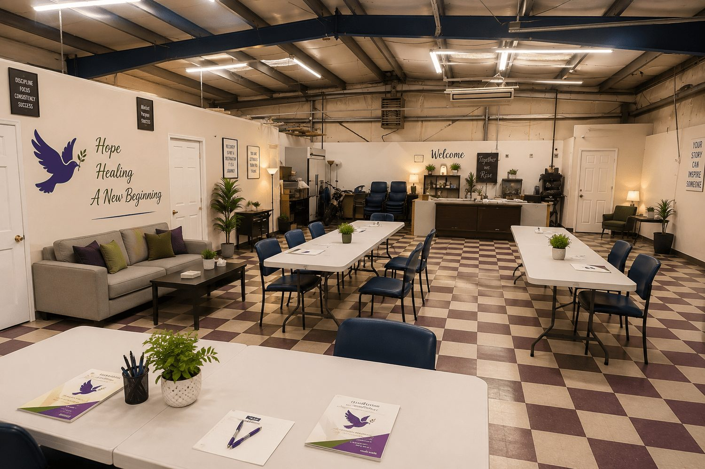
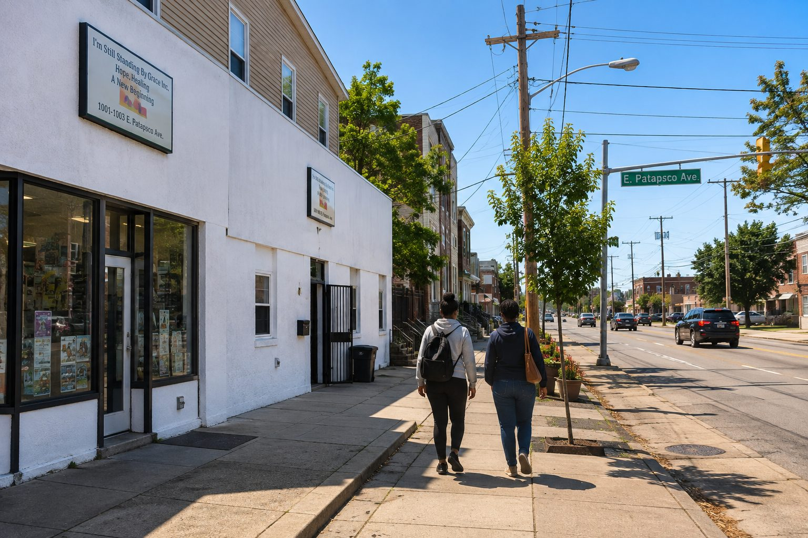
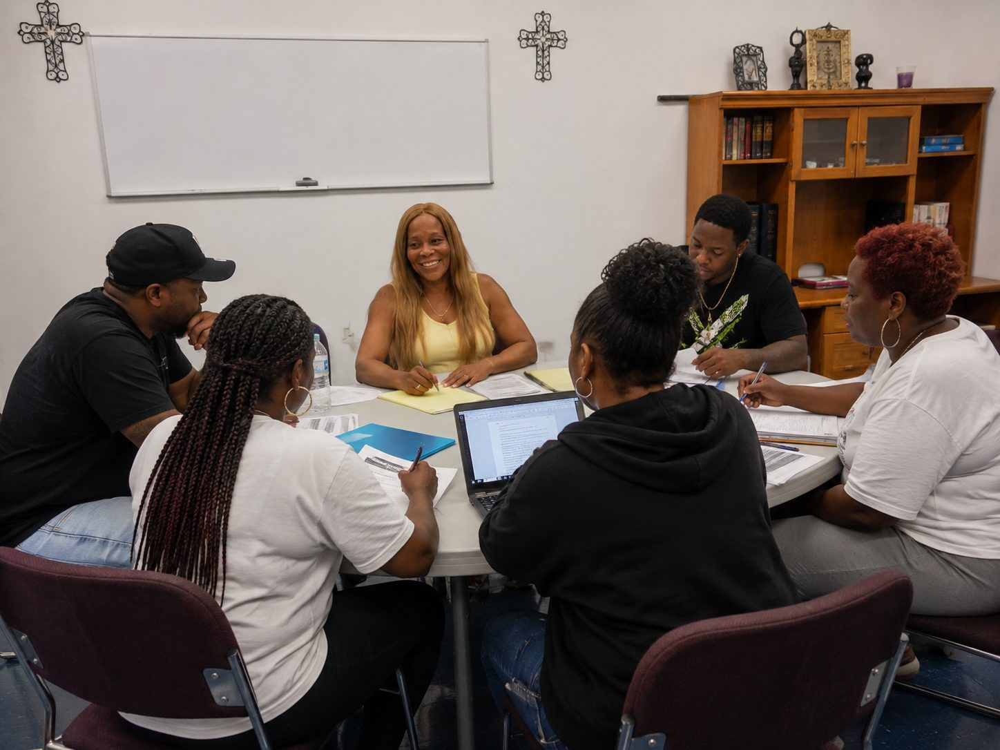
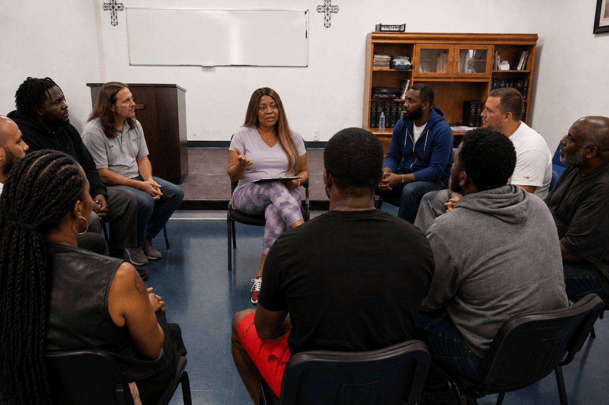
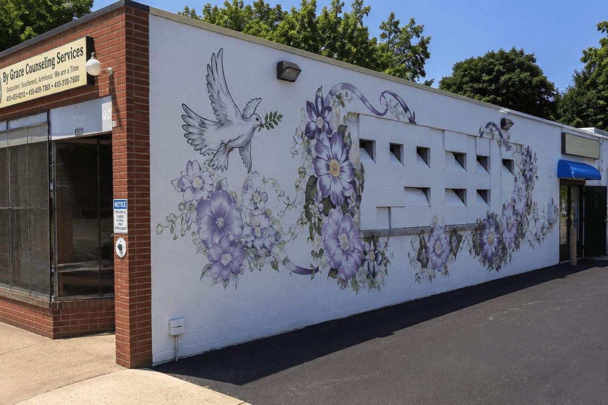
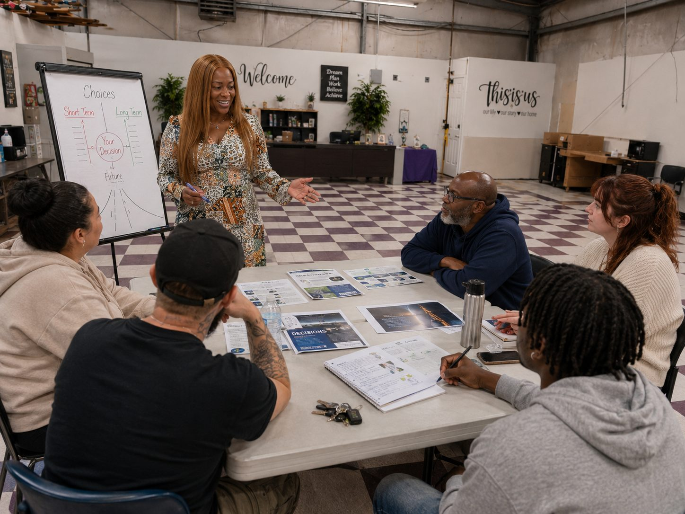
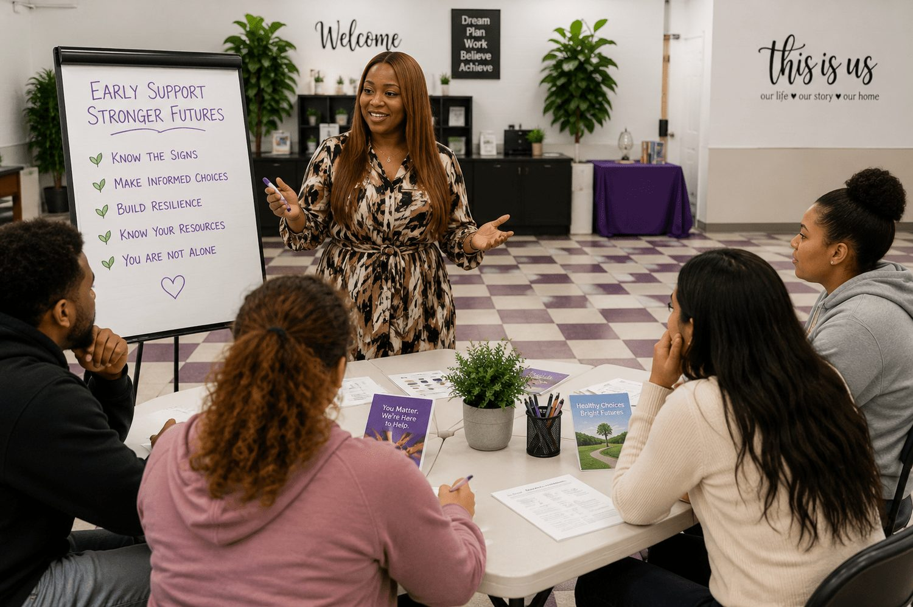

01 Residential Treatment
A structured place to stabilize and grow.
Structured, 24-hour residential care supporting stabilization, recovery skills and increasing independence in a warm, homelike environment.

Behavioral Health · Recovery · Opportunity
Comprehensive residential, outpatient, mental-health and recovery services designed to help people build stability, independence and a stronger future.
Serving individuals, families and referral partners throughout Baltimore.
Continuum of Care
I'm Still Standing By Grace brings together behavioral health, substance-use treatment, residential care, psychiatric rehabilitation, peer support and workforce development under one compassionate approach.
Care is individualized and designed to meet people where they are—supporting stability today while building the skills, confidence and connections that carry forward.
Programs & Services

Structured, 24-hour residential care supporting stabilization, recovery skills and increasing independence in a warm, homelike environment.

Flexible counseling, recovery education, group support and relapse-prevention services designed to work alongside daily responsibilities.

Behavioral-health support addressing emotional wellness, psychiatric needs and co-occurring conditions as part of one coordinated plan.

Recovery-oriented support for independent living, symptom management, community integration and vocational goals.

Supportive living focused on dignity, safety, wellness and quality of life, with care tailored to each person's needs.

Training, reentry support, employment readiness and professional development rooted in practical, lived experience.
Residential Levels of Care
Residential care is organized into levels of intensity, so support can step up or ease down as needs change over time.
Intensive, closely supported care for those who need a highly structured setting.
Structured daily support that builds recovery skills and routine.
Supportive housing with lighter structure as independence grows.
Ongoing connection and step-down support that helps recovery hold.
By Grace Counseling Services
A distinct program offering substance-use treatment and recovery services across a range of intensities.
By Grace Counseling · Direct Line
(410) 355-3711
Call By Grace Counseling Services directly to ask about withdrawal management, opioid treatment and outpatient options.
Call (410) 355-3711Please note: This number reaches By Grace Counseling Services. For I'm Still Standing By Grace admissions, call (443) 831-0191.
How Admissions Work
Reach out by phone or through the contact form to start the conversation.
Share the situation and goals so we can understand how to help.
A review helps identify which services may be appropriate.
Together, identify an appropriate path forward.
Admission depends on individual needs, clinical assessment, program criteria, availability and applicable payer requirements. Maryland Medicaid is accepted only where verified and applicable; not every program is covered.
Training & Education
Final eligibility and CPRS certification are determined by the Maryland Addiction & Behavioral-health Professionals Certification Board (MABPCB). Participation does not guarantee certification.
Whether you are seeking treatment, helping a loved one or making a professional referral, our admissions team can help identify the appropriate next step.
Contact Admissions
I'm Still Standing By Grace, Inc.
Address1001–1003 East Patapsco Avenue
Baltimore, MD 21225
Phone(443) 831-0191
Emailadminsupport@standingbygrace.org
By Grace Counseling Services(410) 355-3711